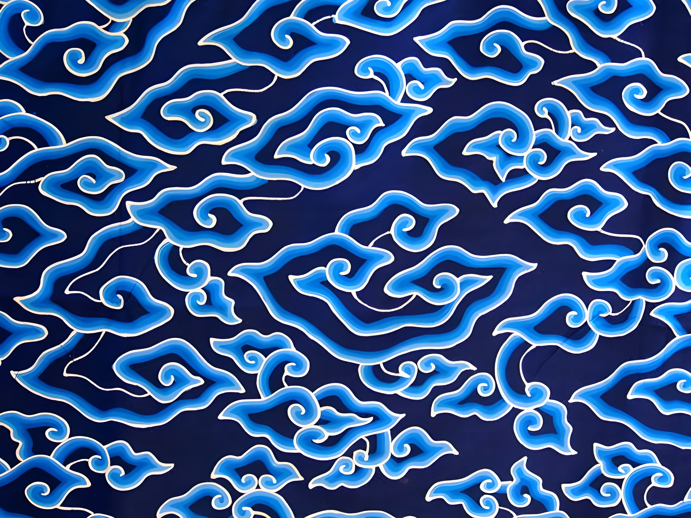
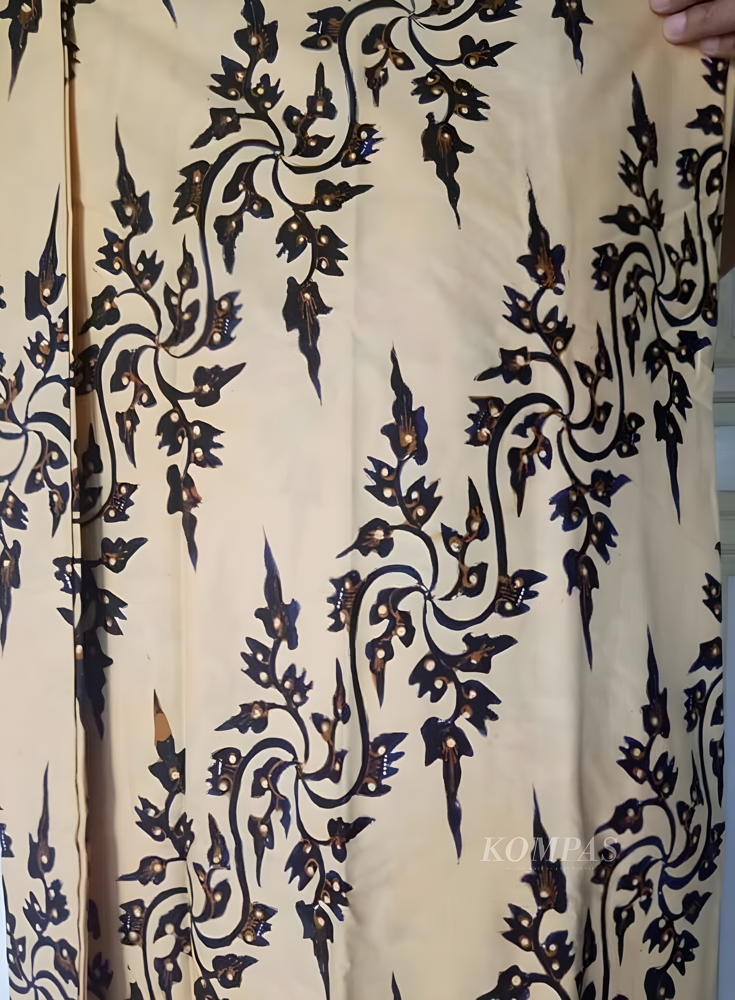
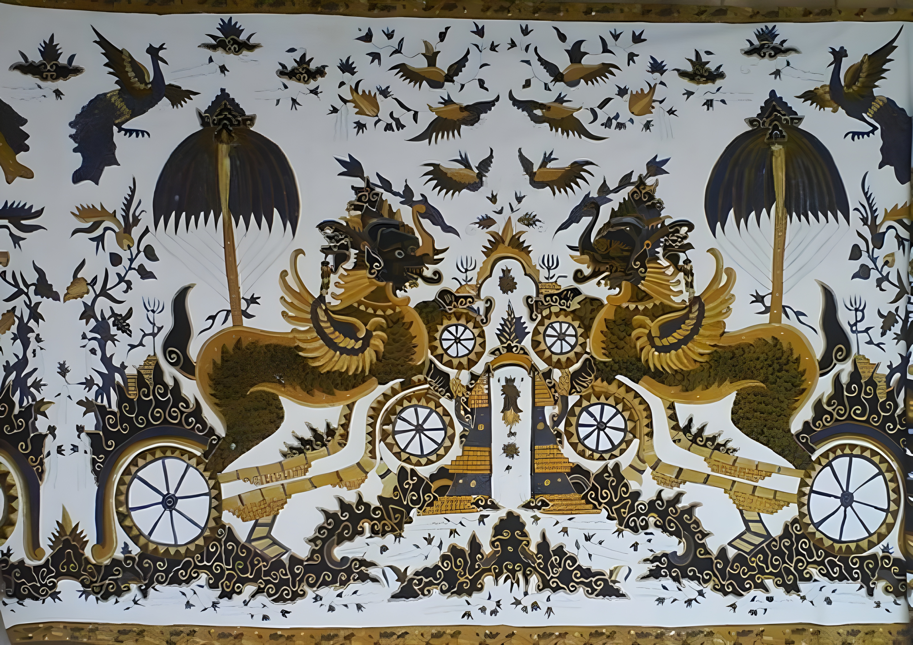

 SiBatik • 4 Oct 2024 Motif Batik Mega Mendung Motif megamendung merupakan wujud karya yang sangat luhur dan penuh makna, sehingga penggunaan motif megamendung sebaiknya dijaga dengan baik dan ditempatkan sebagaimana mestinya.
 SiBatik • 4 Oct 2024 Motif Batik Patran Keris Bentuk motif batik Cirebon patran keris adalah motif yang tergolong klasik, namun sering dipesan oleh orang-orang Jepang layaknya motif paksi naga liman yang digunakan sebagai bahan pembuatan kimono.
 SiBatik • 4 Oct 2024 Motif Batik Singa Barong Batik Singa Barong adalah salah satu motif batik khas Cirebon yang memiliki nilai historis dan filosofis tinggi, dan berhubungan erat dengan sejarah Kesultanan Cirebon. Motif ini menampilkan sosok Singa Barong, hewan mitologis yang menggambarkan gabungan dari berbagai hewan buas, seperti singa, naga, dan burung garuda. Sosok ini merupakan simbol kekuatan, keberanian, dan perlindungan, mencerminkan kebesaran dan kewibawaan Kesultanan Cirebon pada masa lalu.